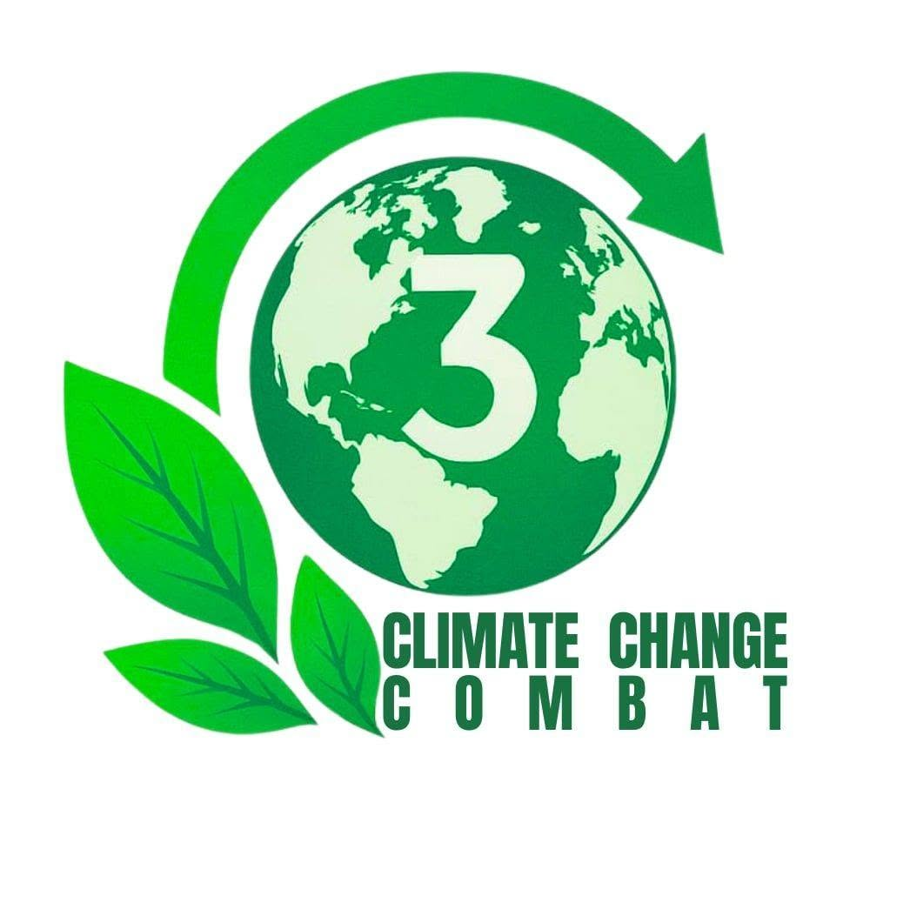

Green Buffer Development
Promoting green spaces and vegetation as part of healthier urban environments.
A climate-focused think tank and volunteer initiative for climate awareness, urban greening and community resilience.

Climate Change Combat (C³) is a climate-focused think tank and community initiative working to encourage practical, nature-based and community-led responses to environmental challenges.
Promoting green spaces and vegetation as part of healthier urban environments.
Encouraging rooftop, indoor and community gardening initiatives.
Community awareness and practical engagement around air quality and environmental challenges.
Sharing knowledge and encouraging public participation in climate action.
Exploring non-traditional climate solutions and nature-based approaches.
Building local participation and climate-conscious communities.
Students, professionals, researchers, educators and community members can express interest in volunteering or contributing to initiatives.